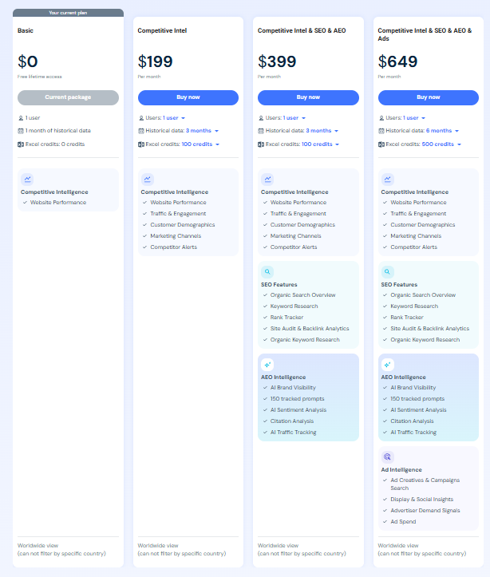
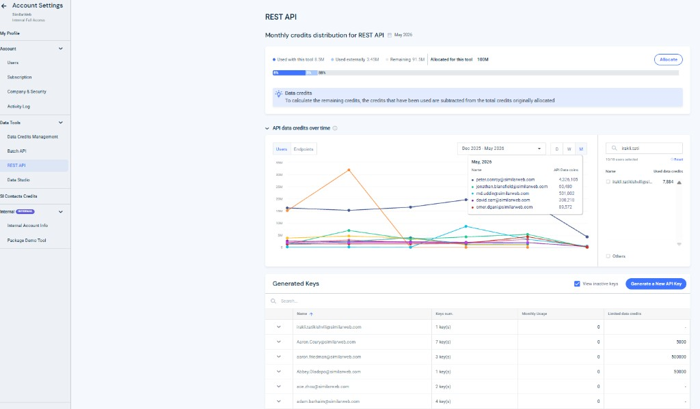
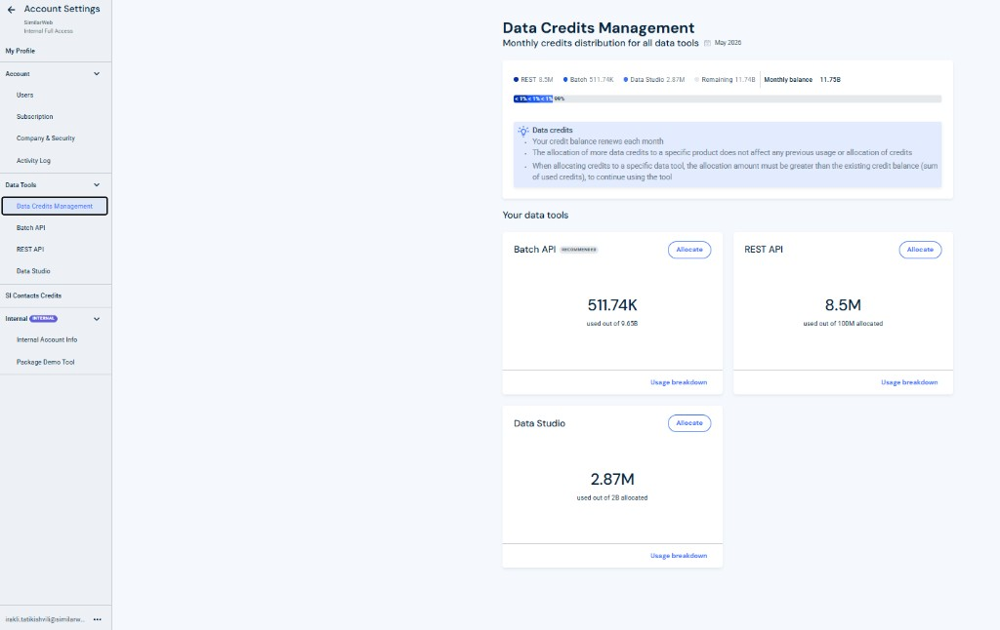
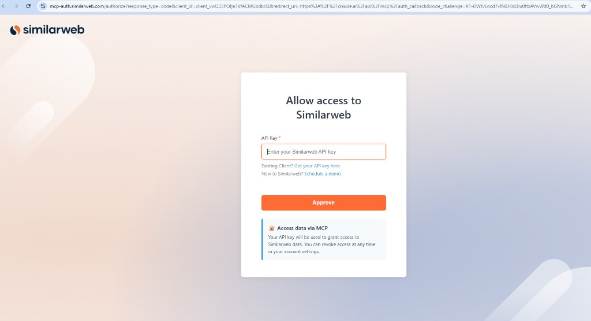

Interactive map of user journeys, PRD pillars, cross-team work, and open decisions. Use the tabs below to walk through how acquisition, activation, monitoring, and monetization connect.
Typical self-serve path: evaluate plans on the site, subscribe, then discover API & MCP through Account Settings. MCP access is included on paid tiers; credits (1 coin system) sit alongside plan limits and add-ons.
User compares packages ($199 / $399 / $649 in current self-serve). MCP is bundled on paid plans with base credits; Free remains the upsell surface (no MCP).
After checkout, the account is provisioned with the entitlement profile for the tier (historical depth, Excel credits today, and shared programmatic credits for REST, Batch, Data Studio, MCP).
Account Settings → Data Tools → REST API. User generates an API key; system applies default allocation from the monthly pool. Success state: key visible, usage widgets populated.
Same API key powers MCP clients (e.g. Claude). In-product messaging: “Use Similarweb inside your AI assistant.”
Data Credits Management for pooled balance; REST API page for per-tool usage, users vs endpoints, keys, and per-user caps. Allocate must satisfy allocation ≥ used credits (per existing rules).
Triggers at ~80% usage (warn) and 100% (block / soft block). CTAs: buy credit packs, upgrade tier, or redistribute allocations. Drives NT → T when burn is sustained.



The MCP connector is the top-of-funnel. The hypothesis: LLM-driven discovery improves CvR → new trials / NTs, then retention via embedded workflows and TLV through ongoing credit consumption.
User selects “Connect Similarweb” / adds Similarweb MCP in the host app. Host redirects to the MCP authorization experience.
User pastes an existing API key or follows Existing client → get key. If net-new, signup with MCP-compatible plan pre-selected and copy: “Use Similarweb inside Claude.”
Non-users complete purchase or start trial (see Open Questions for trial limits). Goal: fast first successful MCP call, not heavy usage on no-CC trial.
OAuth-style return to the host with a working key connection. User can immediately run prompts that invoke Similarweb tools.
Same dashboards as in-product users. Errors from the LLM when credits are exhausted become natural upsell surfaces (buy packs, upgrade, allocate).

Adding MCP (API key) to packages plus credit add-ons should raise CvR → NT via LLM funnels, improve NT retention & TLV through habitual API usage, and unlock NT → T expansion when limits bite.
% NTs via MCP funnel; API key generation rate; credits / NT; % hitting limits; add-on attach; retention of API vs non-API cohorts.
Generate keys, MCP auth, programmatic data access, monitor usage/credits/endpoints, manage keys & allocations.
MCP on all paid tiers; limited on no-CC trial; fuller on CC trial; monetize with shared 1 coin credits + packs.
Acquisition (LLM), activation (first key), monitoring (REST + credits pages), allocation, exhaustion → purchase, NT → T signals.
Subscription base + credit packs (primary growth); future endpoint / rate-limit SKUs.
API abuse → rate limits & anomaly detection. Credit confusion → education & clear UI. Low activation → onboarding & first-call nudges.
| Plan | MCP | Credits | Notes |
|---|---|---|---|
| Free | No | 0 | Upsell entry; no programmatic/MCP. |
| Trial (no CC) | Yes, limited | Low | 1 key, drive activation not heavy burn. |
| Trial (CC) | Yes | Medium | Full MCP experience; build dependency. |
| Paid Basic / $199+ | Yes | Base+ | Core ICP; MCP listed as included benefit. |
| Mid / High tier | Yes | Higher | Agencies & power users; room to grow into add-ons. |
| Enterprise | Yes | Custom | Negotiated pools & guardrails. |
Add-ons: credit packs (primary lever), future endpoint bundles.
Synthesized from your steering notes and PRD dependencies — use as a checklist for execution.
These decisions change both the LLM funnel promise and the metering logic. Resolve before broad marketing of “Similarweb MCP.”
| Cohort | What do we offer MCP-wise? | Open decisions |
|---|---|---|
| No-CC trial | Limited MCP (low credits, single key) — activation-first. | Exact credit budget; which endpoints/tools eligible; duration resets. |
| CC trial | Full MCP experience with medium shared credits. | Whether CC trial matches a specific paid tier cap; overage behavior before conversion. |
| Paid (all tiers) | MCP included; scaling via plan credits + add-on coins. | Per-tier included coins vs Excel legacy credits messaging; coexistence period. |